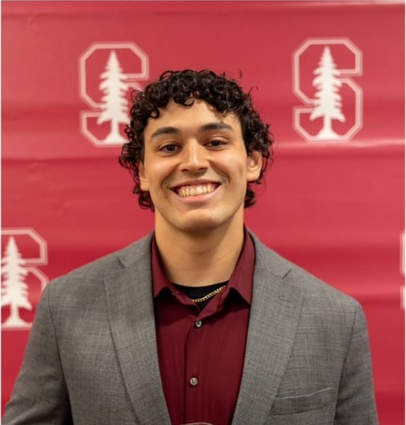

About Me
I am Nolan Pierce, a junior at Stanford University pursuing a degree in Computer Science with a focus on graphics and computer vision. I have built projects both academically and independently, demonstrating strong problem-solving skills and adaptability to new technologies including C++, Python, and Unreal Engine.
My passion for programming began through video games, motivating me to create interactive and visually engaging experiences. I thrive on solving challenging problems, crafting polished solutions, and collaborating effectively within teams.
I am seeking opportunities in game development and software engineering where I can leverage my creativity, technical expertise, and teamwork skills to build impactful products. Please explore my projects, or connect with me on LinkedIn.